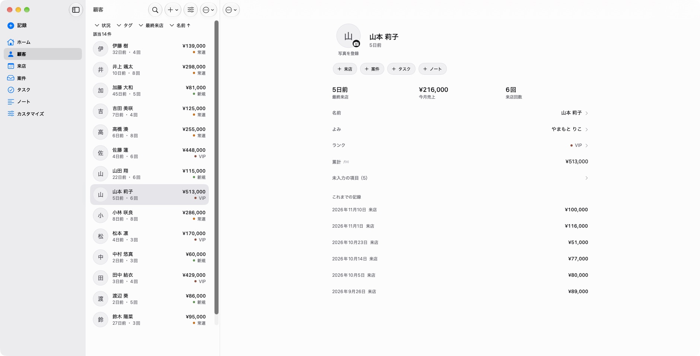
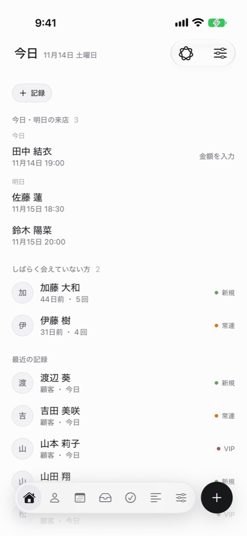
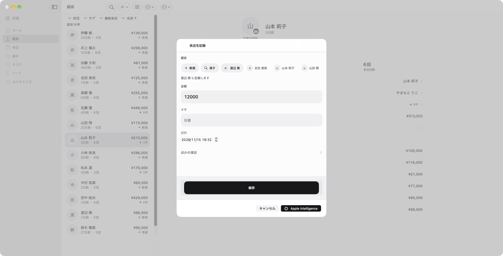
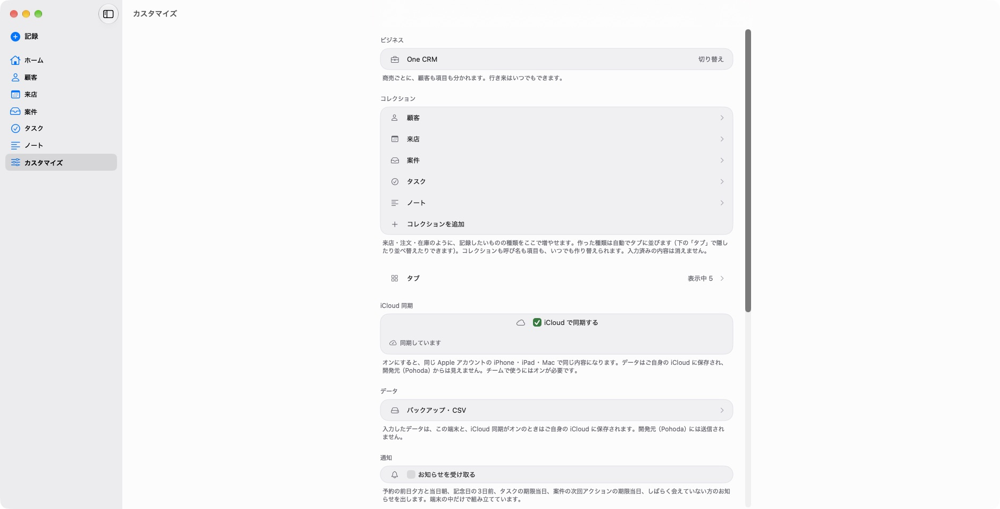

小さな会社と個人事業主の顧客管理
顧客・商談・案件を、
ひとつの台帳に。
会ったことを記録するだけで、最後に連絡した日・回数・売上が自動で出ます。iPhone・iPad・Mac で同じ台帳を使い、チームで共有できます。顧客のデータは Pohoda のサーバーを通らず、自分の iCloud に置かれます。
顧客10件まで無料・カードの登録なし・アカウント登録なし


紙やエクセルの顧客管理で、止まりがちなこと
最後に連絡した日が、自動で出る
会った日を記録するだけで、最後に連絡した日・回数・今月の売上・累計が顧客ごとに出ます。しばらく連絡していない人はホームに並びます。
データは自分の iCloud に
Pohoda はサーバーを持たないので、顧客のデータを受け取ることも見ることもできません。端末と、ご自身の iCloud にだけ置かれます。
1人980円の買い切りだけ
料金は使う人1人ごとに、980円を一度だけ。毎月の費用はかからず、何人で使っても増えるのは人数分だけです。
商売の形に合わせた型から始める
最初に型を選ぶと、項目と呼び名がその形に合わせて入ります。あとから自由に作り替えられます。
機能
顧客の台帳と、会ったことの記録に絞っています。Pro の印があるものは Pro で使えます。
顧客ごとの数字が、記録から自動で
一覧で最後に会った日・回数・累計の売上が並び、選ぶとこれまでの記録が日付順に出ます。
- 最後に連絡した日・回数・今月の売上・累計を自動で計算
- 状況・タグ・最終来店で絞り込みと並べ替え
- 顧客ごとの分析Pro
記録は、選んで金額を入れるだけ
よく来る人がボタンで並び、日付と時刻は入った状態で開きます。対応する iPhone では、話した言葉から記録の下書きも作れます（端末の中で処理）。
- 来店・案件・タスク・ノートをその場で追加
- 予約や次の連絡の通知
- しばらく連絡していない顧客・止まった案件がホームに並ぶ

項目も呼び名も、自社のやり方に
顧客・来店・案件などの「コレクション」と、その中の項目を自由に足せます。案件の段階の選択肢も作り替えられます。
- 金額・日付・選択・タグ・評価・写真などの項目
- 事業ごとに台帳を分ける（行き来はいつでも）
- Excel の CSV をそのまま取り込み

- メンバーを招待して同じ台帳を使うPro
- 参加した人を外す・共有をやめるのはオーナーだけ
- iPhone・iPad・Mac で同じ内容に同期
- Face ID でアプリにロック
- バックアップの書き出しと復元
- CSV の書き出し（Excel で開ける）
- 取引先に担当者を何人でも紐付け
- ライト・ダークの表示
- 広告・追跡なし
料金
料金は買い切りだけです。チームで使うときは、オーナーも参加する人もそれぞれ Pro を一度だけ購入します。毎月・毎年の支払いはありません。
Pro1人あたり
使う人それぞれ1回・以後の支払いなし・今後の機能も含む
無料ではじめて、アプリから Pro に- 顧客・コレクション・項目・自動計算の上限なし
- チームで同じ台帳を使う（日本の App Store）
- 顧客ごとの分析
- 無料の機能はすべて含む
価格は税込です。お支払いは App Store（Apple ID）で一度だけ、請求書払いはありません。すでに月額・年額で登録している方は、解約するまでそのまま使えます。詳しくは特定商取引法に基づく表記へ。
ほかの方法との違い
大手のクラウド CRM（Salesforce・HubSpot など）と、表計算（Excel・スプレッドシート）で顧客を管理する場合と比べました。One CRM にないものも書いています。
| One CRM | 大手のクラウド CRM | 表計算 | |
|---|---|---|---|
| 料金の形 | 10件まで無料。Pro は1人 買い切り980円（毎月の費用なし） | 1人ごとの月額が中心。無料の版があるものも | 表計算ソフトの料金だけ |
| 始めるまで | 入れてすぐ。アカウント登録なし | 会社のアカウントを作り、初期設定をする | 列と関数を自分で作る |
| スマホで記録 | iPhone・iPad・Mac のアプリ | アプリあり | 小さい画面では入力しにくい |
| 最後に連絡した日・売上の集計 | 記録するだけで自動 | 設定すれば出せる | 関数を自分で組む |
| チームで共有 | 招待した人だけ（日本・Pro） | できる。権限も細かく分けられる | ファイルの共有で |
| データの置き場所 | 端末と自分の iCloud | 提供会社のサーバー | 自分のパソコンかクラウドのドライブ |
| メール配信・自動化・外部連携 | ない | ある | ない |
| ブラウザ・Android・Windows | 使えない | 使える | 使える |
大手のクラウド CRM の内容は一般的な傾向です。料金や機能は各社の公式サイトで確かめてください。iPhone の顧客管理アプリ6本との比較は顧客管理アプリの選び方と比較にあります。
データの置き場所と安全性
顧客の名前や連絡先は、預ける先が少ないほど漏れにくくなります。One CRM は Pohoda のサーバーを使いません。
端末
入力したデータは、まずこの iPhone・iPad・Mac に保存されます。Face ID でアプリにロックをかけられます。
自分の iCloud
同期がオンのとき、ご自身の Apple アカウントの iCloud に置かれ、ほかの端末と同じ内容になります。同期はオフにもできます。
Pohoda のサーバー
ありません。データは送られず、Pohoda が見ることもできません。広告・追跡・アカウント登録もありません。
チームで共有したデータは、オーナーの iCloud に置かれ、招待した人だけが読み書きできます。詳しくはプライバシーポリシーへ。
導入の流れ
営業の人との打ち合わせはありません。その日のうちに使い始められます。
アプリを入れる
App Store から入れて、商売の形（法人営業・接客・物販）を選びます。アカウント登録はありません。
顧客を入れる
手で足すか、Excel の顧客リストを CSV で取り込みます。10件までは無料で試せます。
チームを招待する
一緒に使う人がいれば、Pro にして「チームで使う」から招待を送ります。参加する人も Pro にします。
画面ごとの手順は使い方ガイドにあります。
よくある質問
One CRM はどんなサービスですか？
小さな会社や個人事業主のための顧客管理です。顧客の名前と会ったことを記録すると、最後に連絡した日・回数・今月の売上・累計が自動で出ます。iPhone・iPad・Mac のアプリで使い、チームで同じ台帳を共有できます。
無料で使えますか？
はい。顧客は全ビジネス合計で10件まで無料です。記録・通知・バックアップ・CSV の書き出しと取り込み・アプリロックは無料のまま使えます。無料の間はカードの登録もありません。Pro にすると、登録件数や項目などの上限がなくなり、顧客ごとの分析とチームでの共有が使えます。
チームで使うと、料金はどうなりますか？
オーナーも参加する人も、それぞれ Pro（買い切り980円）を一度だけ購入します。3人なら合計2,940円で、以後の支払いはありません。チームでの共有は日本の App Store で使えます。
データはどこに保存されますか？
端末と、ご自身の iCloud です（同期は初期設定でオン・オフにもできます）。Pohoda はサーバーを持たず、データを受け取ることも見ることもできません。アカウント登録も不要で、Face ID でロックをかけられます。
エクセルや他の顧客管理から移せますか？
はい。CSV で取り込めます。Excel で保存した CSV をそのまま読め（UTF-8・Shift_JIS）、1行目の項目名と同じ名前の項目に自動で割り当てます。金額は「1,000」「¥1,000」「1000円」、日付は「2026/1/5」「2026年1月5日」なども読めます。
請求書払いはできますか？
できません。お支払いは App Store（Apple ID）だけです。領収書は Apple から届くメールか、App Store の購入履歴から出せます。
ブラウザや Android・Windows で使えますか？
使えません。iPhone・iPad・Mac のアプリです。
メール配信や、外部サービスとの連携はありますか？
ありません。One CRM は顧客と記録の台帳に絞っています。メールの一斉配信や営業の自動化が必要なら、大手のクラウド CRM が向いています。
まずは10件、無料で試せます
社内で回す資料は、料金・機能・データの置き場所を1枚の PDF にまとめています。入力なしで開けます。導入前の質問は pohoda.inc@gmail.com へ。
運営は Pohoda（杉本 啓輔・個人事業）。日本の事業者向けです。